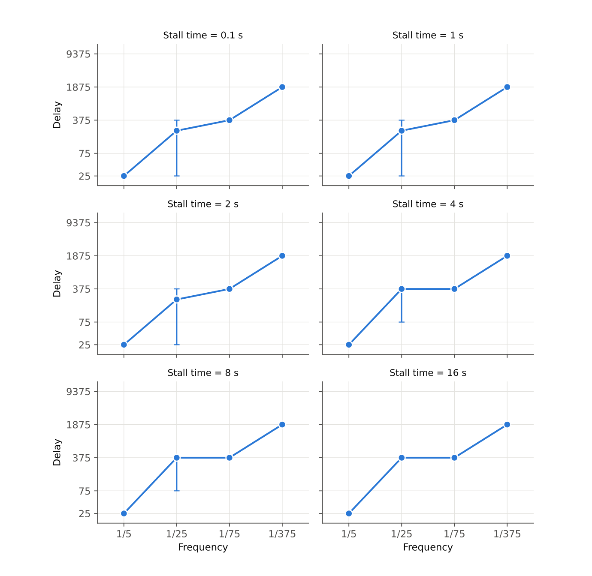

Home
Research
Testing Internet quality thresholds through application measurements.
Mathews Agani and Ranysha Ware, Swarthmore College. ACM CoNEXT Companion ’26, Utrecht, 7–10 December 2026.
Accepted poster paper · to appear
Summary
The study
- Question
- Can the thresholds that Internet quality scores rely on be measured from real applications instead of set by expert opinion?
- Testbed
- Three machines: a test device running a browser, an impairment machine, and a gateway to the Internet. A Linux Netfilter program delays each packet independently with probability 1/f.
- Method
- NetGent replays the same browser workflow against a 24-hour YouTube Live stream pinned to 1080p for about 500 seconds per run. Player state is logged every 0.1 s across five delays (25 ms to 9.4 s) and four frequencies, with four repetitions.
- My contribution
- First author. I built the testbed and impairment program, wrote the streaming workflows and logging changes, ran the experiments, and produced the analysis with my advisor.
- Findings
- Preliminary. Rebuffering is 0% at baseline and has a median of 31.9% when one packet in five is delayed by 25 ms. Using longer stalls to mark a run as degraded changes the threshold very little. Picking a threshold without an arbitrary cutoff remains an open problem.
DOI 10.1145/3844665.3859471 becomes active when the proceedings are published. The paper is licensed CC BY 4.0.
From the paper
Figures

